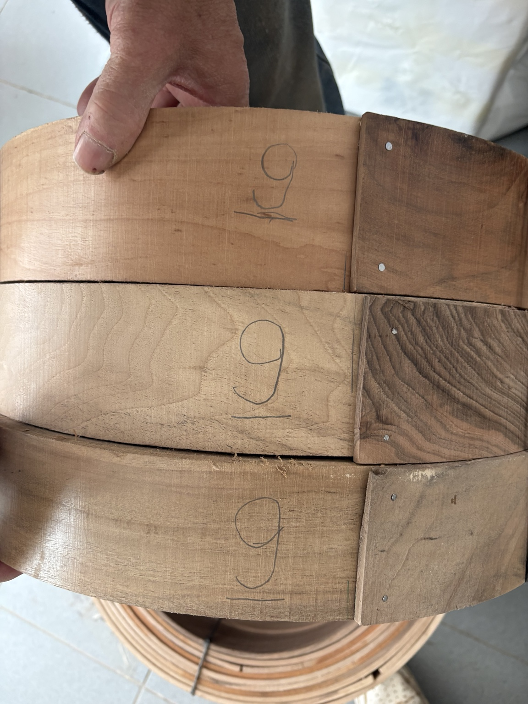
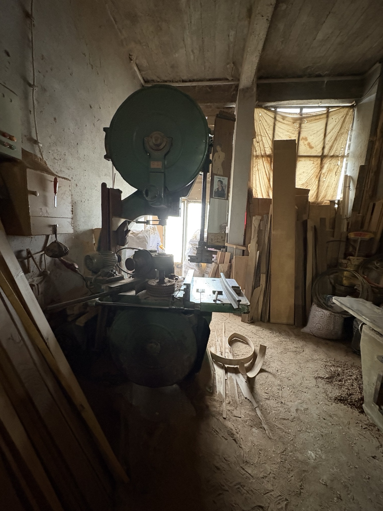
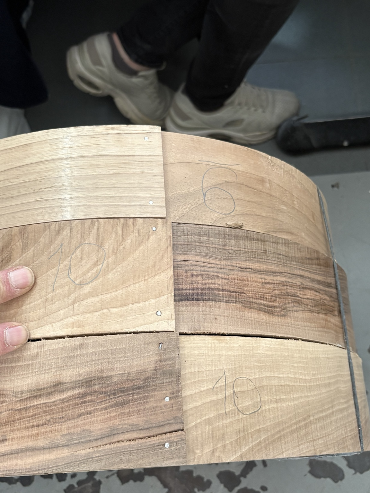
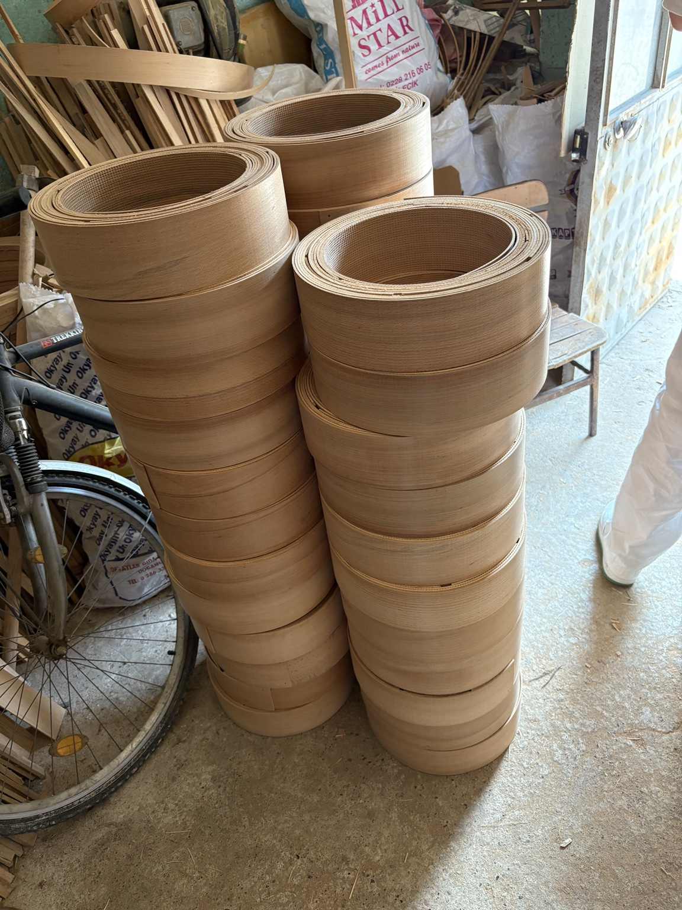
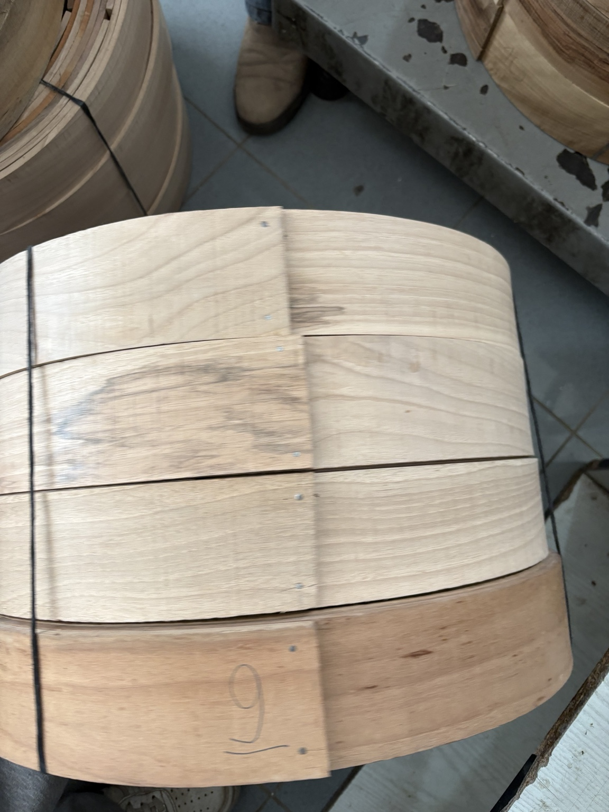

Ahşap kasnak üretimine odaklanan, atölye tecrübesini kalite ve düzenli üretimle birleştiren bir işletmeyiz.

Kayın ve ceviz gibi seçkin ahşaplarla tef, bendir ve davul kasnakları üretiyoruz. Ölçü konusunda esnek, toplu sipariş konusunda üretim odaklı çalışıyoruz.



